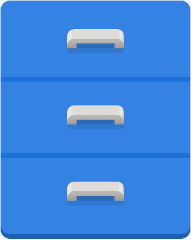
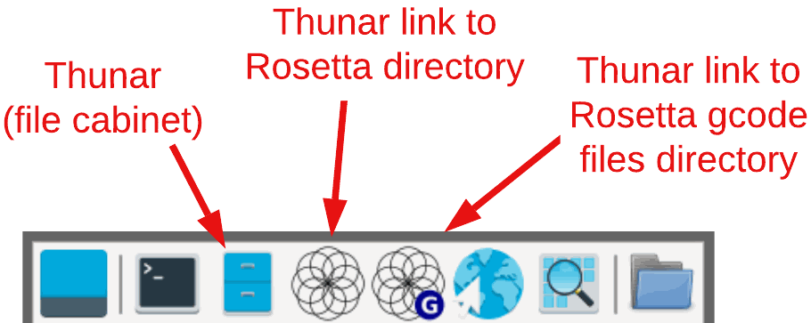
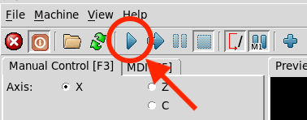

With LinuxCNC, you can download a Gcode program from the Rosetta Gcode library (rosetta.colvintools.com/Rosetta_Gcode_Library) and run that, or run a Gcode program you created.
Storing a Gcode Program on Rosetta
It is recommended that you store the programs in the default directory already setup:
| /home/reuben/linuxcnc/configs/Rosetta/gcode/ |
Key Notes:
- Storing gcode files in this directory (or a sub-directory of this directory) will ensure the backup program will copy them to a USB flash drive.
- Gcode programs in other directories are not backed up using the backup program.
- The Gcode files for LinuxCNC have a file type of .ngc.
|
|
Naming Your Gcode Programs
A few file names are reserved for the Rosetta system's own use. LinuxCNC looks in the gcode directory first when it needs one of its own files, so a program of yours with one of these names could be used in place of the system's file, and features such as the Threading tab would not work correctly.
When you name a Gcode program,
- do not start the file's name with Rosetta or rosetta (in upper or lower case, or any mix of the two). For example, Rosetta_Flower.ngc and rosetta_test.ngc should be renamed, to be something like Flower.ngc and test.ngc.
- do not name it M100 through M199. LinuxCNC treats files with these names as custom M-codes.
Any other name is fine.
If you download a program whose name breaks one of these rules, rename it when you save the file to the gcode directory.
Rosetta checks for these reserved names every time LinuxCNC starts. If one is found, what happens depends on the Startup File Check choice on the Other tab of Rosetta Settings:
- Abort startup (the default) - a message names the file(s) which are using reserved names, and LinuxCNC does not start until they are renamed.
- Warn, but let me continue - the same message is shown, but LinuxCNC starts anyway once you close it.
A short sound plays with the message if startup is aborted - see Sounds.
Key Note:
- Updating the Rosetta system never changes or removes the files in the gcode directory.
Editing a Gcode Program

Thunar

Thunar
You can list all the programs in the directory noted above using the file manager, Thunar. The easiest way to start using Thunar is hover your mouse at the bottom middle of the screen. When the bar pops up, click on the icon which looks like a file cabinet.
Once Thunar is started, you can use the icons on the left side of the screen for Places, navigate to where the Gcode programs are stored. Click on Home then navigate down to
| /home/reuben/linuxcnc/configs/Rosetta/gcode/ |
Alternatively, you can enter the directory in the location field (at the top of the screen) directly by entering the location noted above.
Geany
Then, on the one you wish to edit, right-click on it with your mouse, and choose the editor you wish to use. One editor included with the system is Geany, but you could install a different one if you prefer.
|
|
Running a Gcode Program
To run a Gcode program, LinuxCNC must be in a started mode②.
- Press the O button① on the keyboard to open the program, or
- The Open window starts in the directory where Gcode programs are stored:
| /home/reuben/linuxcnc/configs/Rosetta/gcode/ |
- Click on the Gcode program you wish to run, and click the Open button. After opening the file, the image on the Preview tab should be updated to show a simulation of the movement path. This is an approximation, but may be useful for you.
- If you open a program from a different directory, the Open window will start there for the rest of the session. It starts in the gcode directory again each time LinuxCNC is started.
- You may notice an error. For example, if the Gcode program is expecting to use the B axis but you do not have your system configured to use the B axis, this will generate an error.
- You will have to correct any errors for LinuxCNC to load the Gcode program.

Gcode Go Button
- Press the R button① on the keyboard to run the program, or click on the Go button. This is the one shown in the image to the right.
- If you prefer to step the Gcode program one step at a time, either press the T button①, or use the button to the right of the Go button. If you experience errors with what is happening, this may be useful for you.
Key Note:
- If you open a program from a different directory, the Open window will open that directory for the rest of the session. It will reset to defaulting in the gcode directory again each time LinuxCNC is started.
If an axis is not available for use
When you click Open to open the gcode program you wish to run, Rosetta will check to confirm that the needed axes are configured for use. If an axis has not been assigned to one of the available channels, the gcode program cannot run.
For example,
- If your Rosetta system is setup as:
- Channel 00 - X axis
- Channel 01 - Z axis
- Channel 02 - A axis
- Channel 03 - U axis
- Channel 04 - Sp0
- Channel 05 - Sp1
- And the gcode program you wish to run needs X, Z, and C to run,
The program cannot be executed as there is no C axis.
To remediate this,
- Exit Rosetta,
- Start the Rosetta Settings program.
- The Axis Selection tab will enable you to re-configure the axes so that X, Z, and C are available.
- Save the changes and Exit the Rosetta Settings Program
- Re-start Rosetta
If an axis is not enabled
When you click Go (or press R), Rosetta checks which axes the program moves. If any of them has its ENA button off (red), a box such as C not enabled appears before anything moves:
- Click Enable C and Run (or press Enter) to turn C's ENA on and run the program.
- Click Cancel to leave it off. The program does not run.
If Axis Not Enabled is set to Enable it automatically (on the Other tab of Rosetta Settings), there is no box: the ENA is turned on, a note in the bottom right corner of the LinuxCNC window says so, and the program runs.
Note: The check uses the program's Preview. A rapid (G0) move made before the program's first cutting move is not shown in the Preview, so an axis moved only by such a move is not checked.
|
|
Using AI to Create a Gcode Program
The Claude code program was installed on the Rosetta system. To use it, on the Raspberry Pi, you will need a Claude coding license which is typically included in the Pro plan, but not the free plan. The free plan level can be used on a web browser to do similar work.
Other AI programs may also work; however, we have not tested those.
|
|